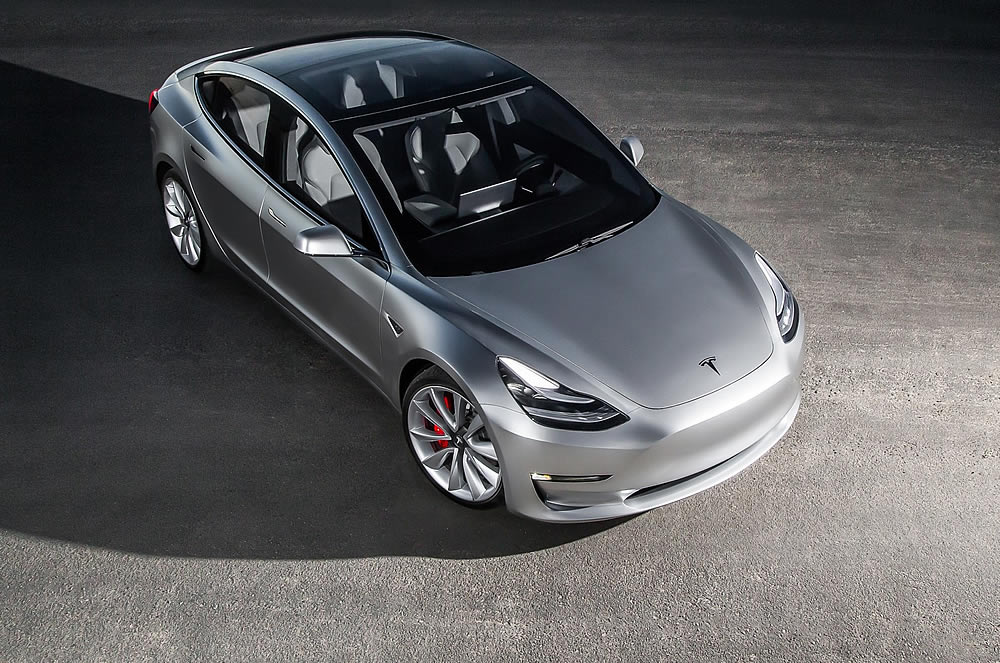
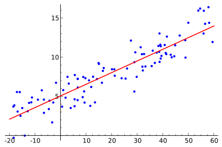

Modélisation et Simulation
pour l'aide à la décision
Séminaire DESIGEO22 Octobre 2018
Paul Chapron, IGN
@chapinux
Modèle : exemples, définition(s),
Simulation : exemples, définition,
Modèles de simulation spatiale,
La simulation pour l'aide à la décision
Qu'est ce qu'un modèle ?
Selon google : model
Selon google : model -woman -man -top -fashion
Selon google : model -woman -man -top -fashion -tesla
Bilan prématuré
Un modèle c'est :
- une représentation idéalisée
- qui mime la réalité
- ou résume un processus, une activité
Qu'est ce qu'un modèle en sciences ?


Et en géomatique ?
Caractéristiques communes
un modèle est une représentation
- idéalisée, stylisée
- simplifiée, régulière
- opératoire, utile
- tronquée, locale
- grossière, fausse
d'un objet, d'un phénomène concret.
Un modèle n'est pas pour autant simple ou facile à manipuler !
Plusieurs types de modèles
Catégories non exclusives :- concret / théorique
- statique / dynamique
- détaillé / simpliste
- général / particulier
- descriptif / explicatif / génératif
Souvent, un modèle possède une portée , une échelle, s'appuie sur une théorie et/ou des données
La nature des modèles
Que sont les modèles (de simulation) ?La fonction des modèles
A quoi servent les modèles (de simulation) ?Nature(s) des modèles
- Modèles matériels : e.g. maquettes, fougères, levures, drosophiles, piscine à vagues
- Modèles symboliques : grammaires , équations mathématiques, programmes informatiques
- Modèles mentaux : modèles conceptuels, ontologies, expériences de pensée
Frank Varenne, Théories et modèles en sciences humaines. Le cas de la Géographie. Éditions Matériologiques. 2017
Caractérisation du modèle de Marvin Minsky:
«Pour un observateur B, un objet A* est un modèle de l'objet A dans la mesure où B peut utiliser A* pour répondre à des questions qui l'intéressent au sujet de A.»
Marvin Minsky, in Frank Varenne, Théories et modèles en sciences humaines. Le cas de la Géographie. Éditions Matériologiques. 2017
La fonction des modèles selon Frank Varenne :
«C'est une fonction générale de médiation, plus exactement une fonction de facilitation d'une médiation dans une enquête de connaissance.»
Frank Varenne, Théories et modèles en sciences humaines. Le cas de la Géographie. Éditions Matériologiques. 2017
Les 5 fonctions des modèles selon Frank Varenne :
- Faciliter l'expérience et l'observation contrôlée
- Faciliter la formulation intelligible (formalisation)
- Faciliter la théorisation (illustration , application)
- Faciliter la co-construction des savoirs (communication)
- Faciliter la décision et l'action
Pour nous aujourd'hui :
Modèle
=
Système expérimental informatique conçu dans l'objectif de (re)produire des structures ou des phénomènes.
=
«Du code et des équations qui nous facilitent la vie pour comprendre un truc»
LA chose à retenir
En général, un modèle n'est PAS prédictif.
un modèle sert à comprendre, à observer, tester des hypothèses (cf. 5 fonctions de Varenne)
Ce n'est pas un oracle ! Même avec des big data !
et pourtant...
le jeu de la vie
À noter
- Automate cellulaire
- Structures stables
- Structures mouvantes ("vaisseaux")
- Structures periodiques
- "Jardin d'Eden" : aucun prédécesseur
La Simulation
Qu'est ce que la simulation ?
Selon google : simulation

Selon google : simulation
Selon google : simulation +gif
Selon google : simulation
La simulation n'est pas toujours à visée scientifique ou d'ingénierie:
e.g. : jeux vidéos, cinéma
Auteur:Clear-Aesthetic https://wiki24.net/r/ClearAesthetic
Beaucoup d'autres sur https://www.reddit.com/r/Simulated/
Simulation : Éléments de définition (F.Varrenne)
Processus d'utilisation un modèle
Technique d'imitation dynamique du réel
Résultat d'un processus de simulation (!)
Action de traitement des symboles qui composent le modèle (!)
Calcul et observation de la dynamique d'un modèle
«Méthode consistant à créer un univers artificiel à partir de théories, de lois ou d’hypothèses et à observer le comportement de cet artefact sous quelques aspects lorsque le modèle est soumis à des variations, notamment temporelles »
Torsten Hägerstrand
Différents types de simulations:
- Simulation continue : Résolution approchée d'équations
- Simulation discrète : Calcul de l'évolution du système (synchrone ou asynchrone)
- Simulation par Systèmes Multi- Agents (SMA) : simulation du comportement des entités du systèmes
Eric Daudé, Modélisation de la diffusion d'innovations par la simulation multi-agents. L'exemple d'une innovation en milieu rural.
"Modèle de simulation"
Ensemble de règles , de mécanismes, écrit en langage informatique, dont l'activation simule un système cible
Une exemple avec GAMA
https://www.youtube.com/watch?v=hITBYKg6Efs https://www.youtube.com/watch?v=9Feb_pVfnpgFortement spatial !
le modèle de ségrégation de Schelling
- Avec une tolérance à 30% tout devrait bien se passer ?
- effet de la densité
- effet de la tolérance
Il y a différents "états du monde" possibles . Comment les comparer ?
Biais ?
- choix
- déplacement
- espace
- temps
- ...
Les modèles de simulation spatiale
Géographie , Transport, AménagementModèles en Géographie
(théorique)(quantitative)
Sébastien Rey-coyrehourcq,Une plateforme intégrée pour la construction et l'évaluation de modèles de simulation en géographie
SimPop : la famille de modèle de systèmes de villes
Objectif : modéliser l'émergence des systèmes de villes sur 2000 ans
$T_0$ : peuplement rural , homogène et dispersé
$T_{final}$ : peuplement urbain , concentré, hiérarchisé
Expliquer l'évolution par les interactions : échanges de fonctions urbaines
www.simpop.parisgeo.cnrs.fr
Denise Pumain
le modèle de ruissellement "Grand Canyon"
Modèles en Transports
Les premiers modèles de transport
Deux études "globales" américaines dirigées par J.D.Carroll : le cas de Détroit , études publiées en 1955 et 1956; puis Chicago en 1959, 1960 et 1962.
La RATP se dote d’un service d’études générales en 1966 et commence à construire un modèle de prévision dès la fin des années 1960.
Hadrien Commenges, L'invention de la mobilité quotidienne. Aspects performatifs des instruments de la socio-économie des transports
Four-step model
- Module de génération : quantité de déplacements attirés et émis par zones prédécoupées (caractéristiques de la population et des activités)
- Module de distribution : répartition géographique des flux (modèle gravitaire)
- Module de choix modal
- Module d'affectation au réseau
utilisé aux États-Unis depuis le milieu des années 1950 et en France depuis le milieu des années 1960.
Module de génération
on cherche à estimer par régression la quantité de déplacement d'une zone (ou d'un ménage) en fonction de variables connues.
e.g.:
\[
D = \beta_0 + \beta_1 Rev + \beta_2 N_{5+} + \beta_3 N_v +\beta_4 N_p
\]
avec
$D$: nombre moyen de déplacement généré par les ménages de la zone
$Rev$ : niveau de revenu moyen de la zone
$N_{5+}$ : nombre moyen de personnes de plus de 5 ans
$N_{v}$ : nombre moyen de véhicule à disposition
$N_{p}$ : nombre moyen de personnes par ménage
Module de distribution
on cherche le flux d'une zone $i$ vers une zone $j$ : modèle gravitaire modifié
$$F_{ij} = \alpha_i \beta_j E_i A_j C_{ij}^{−n}$$
avec $\alpha_i$ et$\beta_j$ des facteurs d'équilibrage qui assurent la contrainte aux marges,
$E_i$ et $A_j$ : valeurs d’émission et d’attraction de la zone (cf étape de génération)
$C_{ij}$ : coût généralisé du trajet de $i$ vers $j$ : temps, prix , inconfort.
$n$ : exposant du coût. la valeur varie selon les motifs de déplacement. (plus faible vers le travail que vers des motifs "secondaires" (e.g. courses quotidiennes))
N.B.: le modèle de distribution doit respecter les émissions et les attractions calculées lors de l’étape de génération. i.e. les marges de la matrice de flux doivent correspondre au total des flux émis et attirés par zones.
Module de choix modal et affectation au réseau
Choix modal : grande variété de propositions.
e.g. :
- modèles d'après enquêtes (EMD)
- modèles/régressions logistiques
- optimisation (homo economicus)
sur une population segmentée (CSP, type de navette ,...)
Affectation au réseau : généralement rationelle (chemin de moindre coût généralisé) par réseau de modalité.
Et la simulation dans tout ça ?
Scénarios
- Modification des caractéristiques de la population
- Modification des caractéristiques de la population
- Modification du réseau de transport
- Modification de l'affectation
- Semaine type / Week end
- Saisonalité, localité
- ...
«Modéliser, puis simuler , puis évaluer (comparer), puis décider»
Double fonction "politique" des modèles en planification des transports
Gabriel Dupuy (1975)
- la fonction de quantification, dont la forme «garante de sa neutralité idéologique et politique »
- la légitimation de «l'action planificatrice de l'appareil d'état»
Deux acteurs clefs: l’État et le corps des Ponts. Utilisation de modèle comme gage de technicité pour se faire une place sur la scène de l’aménagement urbain.
Hadrien Commenges, L'invention de la mobilité quotidienne. Aspects performatifs des instruments de la socio-économie des transports
le modèle d'attachement préférentiel
Réseau "scale free"
- degré = nombre de liens d'un nœud
- scale free networks: $P(k)\ \sim \ k^{-\gamma }$
- Propriété de certains réseaux sociaux, biologiques, web
L'attachement préférentiel (Barabasi Albert 1999) est un modèle génératif.
Modèle en aménagement
Land Use Models
Objet du modèle :
Usage du sol ⇆ Accessibilité
- écologie
- immobilier
- aménagement
- économie
LUTI : Land Use Transport Integration
Schéma LUTI
Principe : Simuler les foyers
- Alimenter l'environnement en données
- Micro-simulation des comportements des foyers
- Ventilation / génération de population synthétique
- Modèle de choix discret (MNL) pour les activités du foyer
- génération d'agendas
- Application des choix (e.g. déplacements)
Modèle de choix discret
Pour choisir :
- lieu de résidence, d'emplois, de consommation
- mode de transport
Modèle logit multinomial donne la probabilité de choisir une alternative (variable discrète) en fonction de plusieurs variables explicatives (discrète ou continues)
Un modèle pour chaque catégorie d'individus et de choix !
MNL
Hypothèses (fortes) :
- Décision = confrontation des alternatives et de leurs utilités
- Part fixe (systématique) et variable (aléatoire) de l'utilité
- l'alternative de plus haute utilité est choisie
- Conditions d'indépendance et de distributions de la part aléatoire
Utilité d'une alternative $a \in A $ pour un individu de la catégorie $c \in C $:
$$ U_{ac} = V_{ac} + \epsilon_{ac}$$
Part systématique $V_{ac}$ : fonction linéaire de caractéristiques propres à l'alternative (paramètres $\beta$), et de caractéristiques liées à la catégorie du décideur (paramètres $\gamma$)
$$V_{ac} = \beta_1 X_{a1} + \beta_2 X_{a2} + \dots + \gamma_{ac1}X_{ac1} + \gamma_{ac2} X_{ac2} + \dots $$
Probabilité pour un individu de la catégorie $c$, de choisir l'alternative $a$ :
$$P_c(a)=\frac{exp(V_{ac})}{\sum_{b \in A } exp(V_{bc})}$$
MNL: suites et limites
Facilité d'implémentation $\forall a $ ,$\forall c$ :
Pour un individu, on tire un nombre aléatoire, on compare à la (distribution de) probabilité cumulée des alternatives de sa catégorie: on obtient sa décision
$\Rightarrow$Les coefficients du modèle linéaire "font" la spécificité du couple $(a,c)$ (discutable ! ).
Outre les hypothèses, déjà fortes :
Estimation des coefficients sur les données (= on récupère tous leurs biais)
Certains choix sont conjoints ou conditionnés (cf. nested logit models),
Entrées/Sorties d'un modèle LUTI
Entrées :
- usage du sol (Corine Land Cover)
- cadastre
- population (structurée)
- emplois (structurés)
- prix du foncier
- réseaux
- politiques d'aménagements (projets industriels, ZAC, lotissements,...)
- zonages (e.g. parc naturel)
- flux externes
- démographie
Entrées/Sorties d'un modèle LUTI
Sorties :
- usage du sol
- Spatialisation des domiciles
- Spatialisation des emplois
- Charge du réseau
Et toute l'analyse spatiale et statistique qu'on peut en faire en croisant les dimensions
UrbanSim
- UrbanSim is a model system to support land use, transportation and environmental planning
- Licensed as an Open Source software system, and is freely downloadable from www.urbansim.com
- Designed by Dr. Paul Waddell, University of California Berkeley
- It is a full microsimulation model system: simulates choices of millions of agents: households, businesses, developers
- Recent surveys show that UrbanSim has become the most widely used land use model system by planning agencies in US
Paul Waddell
Arcadia
CASA , UCL
Demo Arcadia
Plus de détails sur
https://www.ucl.ac.uk/bartlett/casa/research/arcadia-adaptation-and-resilience-cities
SimPLU3D
Bilbliothèque simulant la construction de bâtiments en fonction de règles d'urbanisme (PLU)
Repose sur Geoxygene3D , framework SIG 3D développé à l'IGN
Mickaël Brasebin, Les données géographiques 3D pour simuler l'impact de la réglementation urbaine sur la morphologie du bâti. 2013
les boids
les boids
Analogie avec un fluide ?Simulation pour l'aide à la décision

Simulation pour l'aide à la décision
Décider/Planifier :
«utiliser les connaissances acquises grâce au modèle pour agir sur le terrain»
Et concrètement ?
Les grandes questions à discuter
- A qui sont destinés les modèles ?
- Peut-on faire un modèle sans données ?
- La donnée peut-elle remplacer la théorie?
- Faut-il expliquer pour prédire ?
- Dans quels cas ne pas simuler un système ?
LA chose à retenir
En général, un modèle n'est PAS prédictif.
un modèle sert à comprendre, à observer, tester des hypothèses (cf. 5 fonctions de Varenne)
Ce n'est pas un oracle ! Même avec des big data !